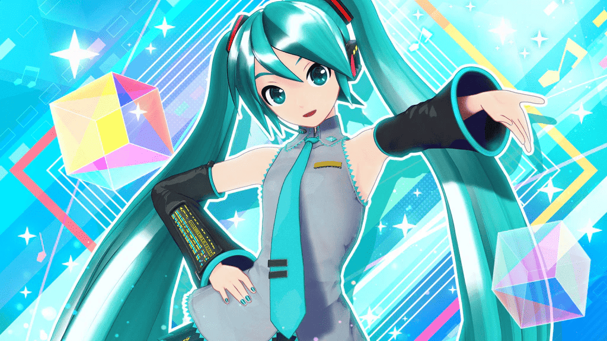

Vocaloid is a software created by Yamaha that enables users to synthesise singing by typing in the desired lyrics and melody.
It uses pre-recorded vocal samples called "voicebanks" to generate the singing voice.

History of Vocaloid ⁀➴⊹ ࣪ ˖
DAWN (2000-2008)
Yamaha begins development of "Daisy", the foundation of Vocaloid.
First public debut at Musikmesse 2003.
VOCALOID(1) launches in 2004 with English libraries Leon and Lola, and Japan's Meiko.
Kaito is released in 2006 as the pioneering male Japanese vocal library.
Nico Nico Douga launches in 2006, becoming key to Vocaloid's growth.
Hatsune Miku debuts in 2007 with VOCALOID2, triggering massive fan activity.
Gackpoid releases in 2008 based on famous Japanese singer and actor Gackt, showing potential for celebrity voicebanks.
DEVELOPMENT (2009-2015)
Mobile and browser-based Vocaloid apps emerge, e.g., NetVOCALOID (2009).
Vocaloid appears in mainstream games like Metal Gear Solid: Peace Walker (2010).
VOCALOID3 launches in 2011, with smoother vocals and multilingual support.
2012 sees VocaListener plugin, allowing users to "sing" to edit vocals.
Vocaloid joins Japan's "Cool Japan" cultural initiative.
VOCALOID4 launches in 2014 with Growl and Cross Synthesis features.
Mobile Vocaloid Editor releases in 2015, enabling editing on smartphones.
MATURITY (2016-2023)
Vocaloid expands into education and hardware (VKB-100 keytar, 2017).
VOCALOID5 launches in 2018 with a modern UI and bundled voicebanks.
VOCALOID:AI debuts in 2019 with deep learning, reviving Hibari Misora virtually.
VOCALOID6 releases in 2022 with AI vocals, multilingual support, and VOCALO CHANGER.
Vocaloid Collection events and contests engage global fanbase.
Real-time voice-to-vocaloid plugin (VOCALO CHANGER) launches in 2023.
★ VOICEBANKS ★
All non-attributed images are drawn by me!!
What are Voicebanks? ⁀➴⊹ ࣪ ˖
Voicebanks are collections of pre-recorded vocal samples.
Each Vocaloid can have many voicebanks suited for different types of songs.
These samples are combined by the software to generate singing based on user-input lyrics and melodies.
Popular Vocaloids + Voicebanks ⁀➴⊹ ࣪ ˖
These are some of the most popular Vocaloids along with audio samples of their voicebanks.
★ PRODUCERS ★
All non-attributed images are drawn by me!!
What are Producers? ⁀➴⊹ ࣪ ˖
Vocaloid producers are musicians who create songs using Vocaloid software.
They utilise various voicebanks to compose and produce music.
These producers are the core of the Vocaloid community, contributing original songs that shape Vocaloid as a music genre.
Favourite Producers ⁀➴⊹ ࣪ ˖
Here are of some of my favourite producers.
★ HOW TO USE? ★
All non-attributed images are drawn by me!!
Software Needed ⁀➴⊹ ࣪ ˖
Vocaloid Editor
Software to edit lyrics and melodies for Vocaloids to sing.
Voicebank
A voicebank that suits the song you want to make.
General User Interface ⁀➴⊹ ࣪ ˖
Helpful Links ⁀➴⊹ ࣪ ˖
★ EVENTS & CONCERTS ★
All non-attributed images are drawn by me!!
How are Vocaloid Concerts Like? ⁀➴⊹ ࣪ ˖
These concerts feature the vocaloids projected onto a screen to make it seem like they are there in person.
There will also be a live band playing onstage as well as back-up dancers in some cases.
Prominent Events ⁀➴⊹ ࣪ ˖
There have been many Vocaloid events and concerts held across the years.
Below only lists down some of the most prominent events but
here
is a full list of official events if you want to delve deeper.
Miku Expo
Miku Expo is a series of annual world tours organised by Crypton Future Media starring Hatsune Miku since 2014.
these tours are held to celebrate and showcase the virtual pop star and the creative culture surrounding her.
However, during the pandemic, virtual events were held instead.
In 2025, the Miku Expo will be held in Singapore for the first time.
The event is scheduled for November 19 at The Star Theatre.
Hatsune Miku "Magical Mirai"
Magical Mirai has been held annually since 2013 to celebrate Miku's birthday, usually taking place in Tokyo.
It is typically held on a weekend in late August or early September.
Along with the concert itself, there is also an exhibition that displays fan-made artwork, merchandise and interactive exhibits as well as a programming contest that'sbeen held annually since Magical Mirai's 10th anniversary.
Snow Miku Festival
The Snow Miku festival is an annual winter event that has been held in Hokkaido since 2010, featuring a winter-themed version of Hatsune Miku.
Each year, a new Snow Miku costume design is chosen through an online competition, with different themes each year.
It is held to celebrate Hokkaido's winter, with various events and attractions, including a large snow sculpture of Snow Miku as the central attraction.
The festival is closely linked to the Sapporo Snow Festival and also includes stage shows, merchandise sales, and even a Snow Miku-themed tram.